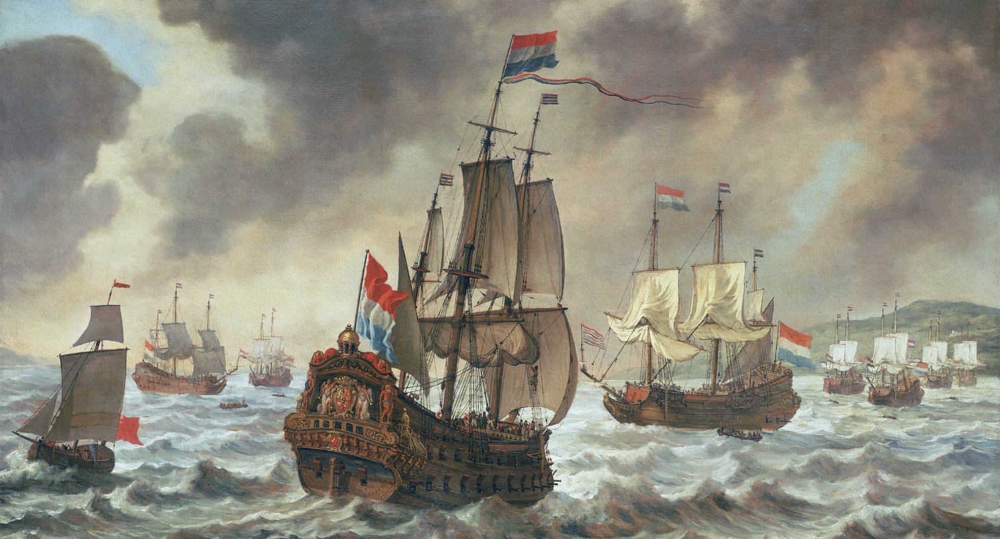

Gemaakt door Tom en Tristan
Scheepsvaartmuseum Amsterdam
Home
Openingstijden
Maandag - Gesloten
Dinsdag - 10.00 t/m 17.00
Woensdag - 10.00 t/m 17.00
Donderdag - 10.00 t/m 17.00
Vrijdag - 10.00 t/m 17.00
Zaterdag - 10.00 t/m 17.00
Zondag - 10.00 t/m 17.00
Tickets
